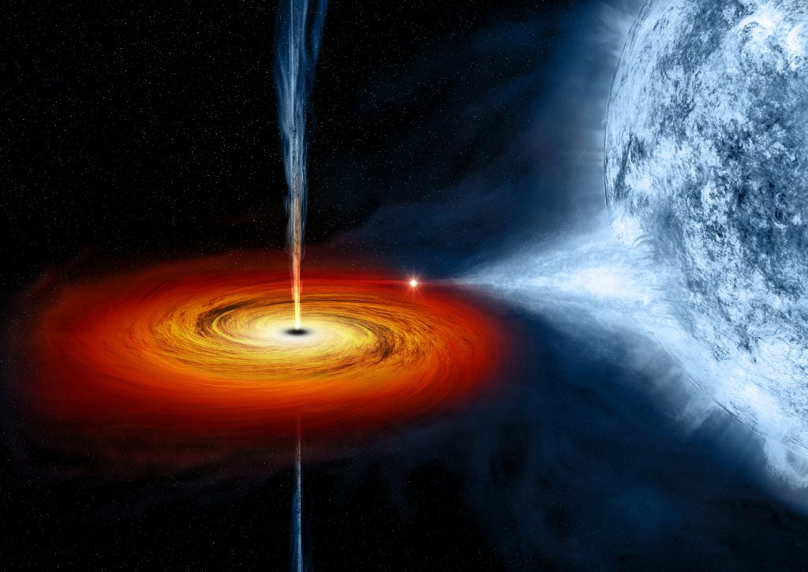

ကမ္ဘာကနေ အလင်းနှစ် ၉,၆၀၀ ခန့် အကွာမှာ ရှိနေတဲ့ Black Hole တွင်းနက် တစ်ခု ရဲ့ အနား ပတ်လည်က ထွက်လာတဲ့ အလင်းရောင် တွေဟာ ပုံမှန် တွေ့နေကြ တွင်းနက်တွေရဲ့ ပတ်ခြာလည်က အလင်းရောင်တွေလို ညီညီ ညာညာ ဖြစ်မနေပဲ အလင်းရောင်ရဲ့ ပြင်းအားက မညီမညာ ထွက်ပေါ် နေတာကို ထူးထူး ခြားခြား တွေ့မြင်ခဲ့ ကြရတာပါ။
ဒီလို ဖြစ်ရတာဟာ ဒီ တွင်းနက်ရဲ့ ပတ်ခြာလည်မှာ လှည့်ပတ်နေတဲ့ ဓါတ်ငွေ့ ဝဲဂယက် (Accretion Disk) ကြီးဟာ ပုံမှန် အခြား ဘလက်ဟိုး တွေလို ညီညာ မနေပဲ ထူးထူးခြားခြား ပုံပျက် ပန်းပျက် ဖြစ်နေလို့ ဖြစ်တယ်လို့ ဒီ သုတေသီ တွေက ကောက်ချက် ဆွဲထားပါတယ်။
အခု တွေ့ရှိတဲ့ Black Hole တွင်းနက်ကို MAXI J1820+070 လို့ အမည် ပေးထားပါတယ်။ ဒီ တွင်းနက်ကို ၂၀၁၈ ခုနှစ် မတ်လက အပြည်ပြည် ဆိုင်ရာ အာကာသ စခန်းပေါ်မှာ ရှိတဲ့ ဂျပန် X-Ray တယ်လီစကုပ် ကနေ ရှာဖွေ တွေ့ရှိ ခဲ့တာပါ။ စတွေ့စက သူ့ကို X-Ray ရောင်ခြည်လှိုင်းတွေ ထုတ်လွှင့်တဲ့ အရာ ဝတ္ထု တစ်ခု အနေနဲ့ စတွေ့ခဲ့တာဖြစ်ပါတယ်။
X-Ray Transient လို့ ခေါ်တဲ့ ဒီလို ဓါတ်ရောင်ခြည် ထုတ်လွှတ်တဲ့ အရာဝတ္ထု တွေဟာ X-ray ရောင်ခြည်တွေကို ထုတ်လွှင့်ရာမှာ အင်အား တက်လိုက် ကျလိုက် (နည်းလိုက် များလိုက်) နဲ့ ထုတ်လွှင့် တတ်ကြပါတယ်။
ဒီလိုမျိုး အား နည်းလိုက် များလိုက်နဲ့ X-ray ထုတ်လွှင့်တဲ့ အရာတွေဟာ အများအားဖြင့်တော့ ကြယ်နှစ်ခု ပူးနေတဲ့ ကြယ်စုံတွဲ တွေ ဖြစ်ကြပါတယ်။ ဒီ ကြယ်စုံတွဲမှာ တစ်စင်းက ကြယ် အသေးစားလေး တစ်လုံး ဖြစ်ပြီး ကျန်တဲ့ တစ်စင်းကတော့ ကြယ် သေသွားပြီး ဖြစ်လာတဲ့ ကြယ်ဖြူပု (သို့) နျူထရွန် ကြယ် (သို့) Black hole တွင်းနက် ဖြစ်နေ တတ်ပါတယ်။ (ကြယ်ဖြူပု = White Dwarf; နျူထရွန်ကြယ် = Neutron Star)
အခု MAXI J1820+070 ကတော့ ကြယ် အသေးလေး တစ်စင်းနဲ့ တွဲနေတဲ့ Black hole တွင်းနက် ဖြစ်ပြီး ဒီ တွင်းနက်ရဲ့ ဒြပ်ထုဟာ ကျွန်တော်တို့ နေရဲ့ ဒြပ်ထု ထက် ၈ ဆ လောက် ကြီးတယ်လို့ ဆိုပါတယ်။
ယခု တွေ့ရှိချက်ကို နက္ခတ္တ ဗေဒနဲ့ ပါတ်သက်ရင် ထိပ်တန်း သုတေသန ဂျာနယ်ကြီး တစ်စောင်ဖြစ်တဲ့ “တော်ဝင် နက္ခတ်ဗေဒ အသင်းကြီး၏ လစဉ် မှတ်တမ်း (Monthly Notices of the Royal Astronomical Society)” မှာ တင်ပြထားတာ ဖြစ်ပါတယ်။
ဒီ သုတေသနကို တောင်အာဖရိက၊ UK ပြင်သစ် နဲ့ အမေရိကန် ပြည်ထောင်စုက နက္ခတ် ပညာရှင်တွေ စုပေါင်း ပြုလုပ်ခဲ့တာ ဖြစ်ပါတယ်။ ဒီ သုတေသန အဖွဲ့ ခေါင်းဆောင်ကတော့ တောင်အာဖရိက နက္ခတ် လေ့လာရေး (South African Astronomical Observatory (SAAO)) က သုတေသီ ဒေါက်တာ ဂျက်စ်မောလ် သောမတ်စ် (Dr. Jessymol Thomas, a Postdoctoral Research Fellow) ဖြစ်ပါတယ်။
ဒီ သုတေသန အတွက် black hole ပတ်ဝန်းကျင် ကနေ ထွက်လာတဲ့ အလင်းရောင်စဉ်တွေကို ရရှိနိုင်ဖို့ ကမ္ဘာတဝှမ်းက အပျော်တမ်း နက္ခတ် ဝါသနာ ရှင်တွေရဲ့ အကူအညီကို ရယူခဲ့ ပါတယ်။ ဒီ အပျော်တမ်း နက္ခတ် ဝါသနာ ရှင်တွေဟာ AAVSO (American Association of Variable Star Observers) အသင်းကြီးရဲ့ အသင်းဝင်တွေလဲ ဖြစ်ကြပါတယ်။
အခု X-Ray ထုတ်လွှတ်တဲ့ တွင်းနက်ဟာ ဆိုရင် အခုထိ ထောက်လှမ်း ရှာဖွေ ရသမျှ X-ray ရောင်ချည်တွေကို တက်လိုက် ကျလိုက် ထုတ်လွှတ်တတ်တဲ့ transient တွေထဲမှာ အလင်းရောင် အတောက်ပဆုံး တွေထဲက တစ်ခု အပါအဝင် ဖြစ်ပါတယ်။ ဒါကလဲ ကမ္ဘာနဲ့ သိပ်မဝေး လှတာရယ်၊ နောက်ပြီး ကြယ်တွေ ပြွတ်သိပ်နေတဲ့ မစ်ကီးဝေးရဲ့ ဗဟိုကနေ ဝေးရာမှာ ရှိနေတာရော ကြောင့်ဖြစ်ပါတယ်။
အခု သုတေသန အတွက် လိုအပ်တဲ့ တွင်းနက်ပတ်ဝန်းကျင်က အလင်းရောင် ဆိုင်ရာ အချက်အလက်တွေကို ရရှိနိုင်ဖို့ ရာပေါင်းများစွာသော အပျော်တမ်း နက္ခတ် ပညာရှင် တွေဟာ လနဲ့ချီပြီး အချက်အလက်တွေ စုဆောင်းခဲ့ ရတာ ဖြစ်ပါတယ်။
ဒီသုတေသနမှာ အဖွဲ့ဝင် တစ်ဦးဖြစ်တဲ့ UK နိုင်ငံ ဆောက်သမ်တမ် တက္ကသိုလ်မှ (University of Southampton) ပါမောက္ခ ဖီလ် ချားလ်စ် (Professor Phil Charles) က အခုလို ရှင်းပြပါတယ်။
ကြယ် နှစ်လုံးပူး ထဲက ပုံမှန်ကြယ်က ဓါတ်ငွေ့တွေကို သူနဲ့ တွဲနေတဲ့ တွင်းနက် ကနေပြီး ဆွဲစုပ် ယူလိုက်ပါတယ်။ ဒီ ဓါတ်ငွေ့တွေဟာ တွင်းနက်ကြီး ဆီကို ဝဲဂယက် ကြီးလို ပတ်ခြာလည် ဝေ့ယမ်းပြီး ဝင်ရောက် သွားတာပါ။ ဒီ ဝဲကြီးကို Accretion Disk လို့ ခေါ်ပါတယ်။ ဒီဓါတ်ငွေ့တွေနဲ့ အခြား အရာဝတ္ထုတွေ တွင်းနက်ရဲ့ နှုတ်ခမ်းဝ ဖြစ်တဲ့ ပြန်လမ်းမဲ့ နယ်ခြားစည်း (Event Horizon) ကို ဖြတ်ဝင် သွားတဲ့ အချိန်မှာ ပြင်းထန်တဲ့ စွမ်းအင်တွေ အဖြစ် အပြင်ဖက်ကို ထွက်လာပါတယ်။ ဒီဖြစ်စဉ်က ပရမ်းပတာ နိုင်လွန်းလှပြီး ထွက်လာတဲ့ စွမ်းအင်ကလဲ တသတ်မတ်ထဲ မရှိပါဘူး။ တခါတလေ မီလီ စက္ကန့် ပိုင်း (၁၀၀၀ မီလီ စက္ကန့် ဟာ တစ်စက္ကန့်နဲ့ ညီပါတယ်) လောက်ပဲ ကြာပြီး တခါတလေ ကျတော့ လနဲ့ချီ ကြာအောင် စွမ်းအင်တွေ ထွက်နေ တတ်ပါတယ်။
အခု ပြောသလို အနားက ကြယ်က ဓါတ်ငွေ့တွေ တွင်းနက်ထဲကို စီးဝင်သွားတဲ့ အခါမှာ တွင်းနက်ရဲ့ နှုတ်ခမ်း အဝနား ကပ်နေတဲ့ နေရာ (Event Horizon နားက နေရာ) ကနေ စွမ်းအင် အမြောက်အများ ထွက်လာပါတယ်။ ဒီ ထွက်လာတဲ့ စွမ်းအင်တွေဟာ X-Ray ရောင်ခြည် လှိုင်းတွေ အနေနဲ့ ထွက်လာတာ ဖြစ်ပါတယ်။

တွင်းနက်က ထွက်လာတဲ့ X-Ray လှိုင်း တွေက တက်လိုက် ကျလိုက်နဲ့ ဖြစ်နေတာမို့ တွင်းနက်ရဲ့ ပတ်လည်က ဓါတ်ငွေ့ဝဲကြီးရဲ့ အပူချိန် ကလဲ တက်လိုက် ကျလိုက် ဖြစ်နေပါတယ်။ အပူချိန် တက်လာတဲ့ အချိန်ဆို အရောင် တောက်လာပြီး ဓါတ်ရောင်ခြည် ထွက်တာ နဲသွားတဲ့ အချိန်ဆို အပူချိန် ကျသွားတဲ့ အတွက် အလင်းရောင်ကလဲ အားပြော့ သွားပါတယ်။
ဒီလို စောင့်ကြည့် လေ့လာပြီး အချက်အလက်တွေ ကောက်ယူ နေ ခဲ့ကြရာမှာ အချိန် ၃ လလောက် အရောက်မှာတော့ မထင်မှတ် ထားတဲ့ အဖြစ်အပျက် တစ်ခု ဖြစ်လာပါတယ်။
တွင်းနက်ရဲ့ ပတ်လည်က ထွက်နေတဲ့ အလင်းရောင် တွေဟာ လင်းလိုက် မှိန်လိုက် ဖြစ်လာတာပဲ ဖြစ်ပါတယ်။ ဒါပေမယ့် တွင်နက်က ထွက်နေတဲ့ ဓါတ်ရောင်ခြည် တွေကို စစ်ဆေး ကြည့်လိုက်တော့လဲ ဓါတ်ရောင်ခြည် ထွက်တဲ ပမာဏက တည်ငြိမ် နေတာကို ထူးထူးဆန်းဆန်း တွေ့ကြရပါတယ်။ ဖြစ်ရမှာက ဓါတ်ရောင်ခြည် ထွက်တာ နဲလိုက် များလိုက် ဖြစ်မှ အလင်းရောင် ကလဲ မှိန်လိုက် လင်းလိုက် ဖြစ်ရမှာပါ။ အခုတော့ ဓါတ်ရောင်ခြည်က ပုံမှတ် ထွက်နေရဲ့ သားနဲ့ ဘာ့ကြောင့် ထွက်လာတဲ့ အလင်းရောင်က မှိန်လိုက် လင်းလိုက် ဖြစ်နေရလဲ ဆိုတာကို ပညာရှင်တွေ စဉ်းစား စရာ ဖြစ်လာပါတယ်။
ပထမတော့ ထွက်လာတဲ့ ဓါတ်ရောင်ခြည် တွေက အနားက ကြယ်ရဲ့ အတွင်းဖက် မျက်နှာပြင်ကို ရိုက်ပြီး အရောင် ပိုတောက် လာတာလား လို့ တွေးမိကြပါတယ်။ ဒါပေမယ့် ကမ္ဘာကနေ မြင်ရတဲ့ အနေအထား အရဆို ကြယ်က ဒီ တွင်းနက်ရဲ့ အခြား တဖက်မှာ ရောက်နေတာမို့ ဒါလဲ မဖြစ်နိုင် ပါဘူး။
ဒီတော့ သုတေသီ တွေဟာ နောက်ဆုံး ဖြစ်နိုင်တာ တခုကို ကောက်ချက် ဆွဲခဲ့ပါတယ်။ ဒါကတော့ တွင်းနက်ရဲ့ နှုတ်ခမ်းဝ ကနေ ထွက်လာနေတဲ့ ဓါတ်ရောင်ခြည် တွေဟာ အားပြင်းလွန်းလို့ ပတ်ခြာလည်က ဓါတ်ငွေ့ ဝဲကြီးကို ပုံပျက် ပန်းပျက် ဖြစ်သွားအောင် လုပ်လိုက်တဲ့ အတွက် ထွက်လာတဲ့ အလင်းရောင်ရဲ့ အားကလဲ လင်းလိုက် မှိန်လိုက် ဖြစ်နေရတာ လို့ ကောက်ချက် ဆွဲခဲ့ ကြပါတယ်။
ဒီလို ဓါတ်ငွေ့ဝဲကြီး ပုံပျက်ပြီး ဗိုက်ပူ သွားတဲ့ အတွက် ဒီ ဖေါင်းသွားတဲ့ အပိုင်းက အလင်းရောင် တောက်လာတာ ဖြစ်ပါတယ်။ ဒီလို အဖြစ်မျိုးကို အရင်ကလဲ တွေ့ခဲ့ ဖူးပေမယ့် အရင် တွေ့ခဲ့ ဖူးတဲ့ ကြယ်စုံတွဲ တွေက Black Hole ကလဲ အကြီးကြီးတွေ ဖြစ်ပြီး သူနဲ့ တွဲနေတဲ့ ကြယ်ကလဲ ဒြပ်ထု အလွန်ကြီးတဲ့ ကြယ်ကြီးတွေပါ။ အခုလို ကြယ်ကလဲ သေးသေးလေး၊ Black hole ကလဲ ခပ်သေးသေး စုံတွဲမှာ တွေ့ရတာ ဒါဟာ ပထမဆုံး ဖြစ်တယ်လို့ ဆိုပါတယ်။
အခု တွေ့ရှိချက်ဟာ တွင်းနက်တွေရဲ့ ပတ်လည်က ဓါတ်ငွေ့ ဝဲဂယက် တွေနဲ့ ပါတ်သက်လို့ မသိသေးတဲ့ သဘော သဘာဝတွေကို လေ့လာဖို့ လမ်းစ ဖွင့်ပေးလိုက်တာပါ။
ပါမောက္ခ ချားလ်စ် ရဲ့ အဆိုအရတော့ အခု တွင်းနက်-ကြယ် စုံတွဲဟာ အခြား ဒီအရွယ် ကြယ်စုံတွဲ တွေနဲ့ မတူပဲ ထူးခြား နေပါတယ်တဲ့။ အခု ကြယ်စုံတွဲကို လေ့လာခြင်း အားဖြင့် စကြာဝဠာ ထဲက ကြယ်တွေရဲ့ ဘဝ နေဝင်ချိန် နဲ့ ပါတ်သက်လို့ ပိုသိလာရသလို တွင်းနက်တွေ ဖြစ်ထွန်း ပေါ်ပေါက်လာမှု နဲ့ ပါတ်သက်လို့လဲ ပိုသိလာရ ပါတယ်လို့ ဆိုပါတယ်။
Reference: Strange Black Hole Discovered in Milky Way With a Huge Warp in Its Accretion Disc | SciTech Daily